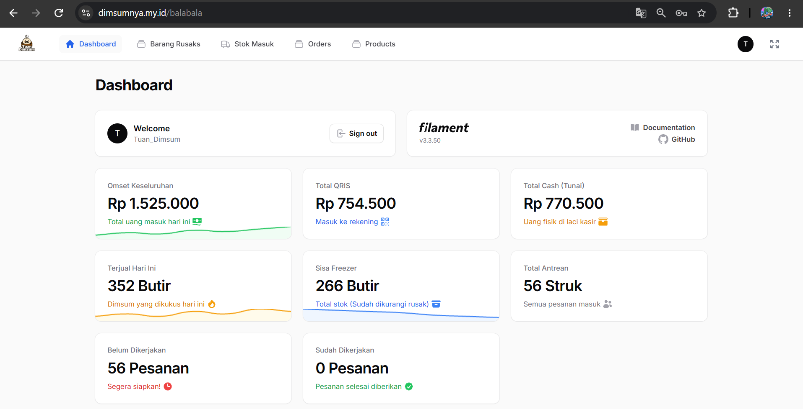

LIVE & AKTIF DIGUNAKAN
dimsumnya.my.id ↗
Web POS & Manajemen Stok — Tuan Dimsum
Merancang, membangun, dan mengimplementasikan sistem kasir serta inventori berbasis web (Laravel Filament v3) untuk mendukung operasional harian karyawan secara real-time. Bertanggung jawab atas konfigurasi deployment ke hosting, pemeliharaan database, serta pendampingan teknis (application support) bagi staf kasir dalam memantau antrean pesanan, mencetak struk, mengawasi sisa stok freezer dan barang rusak, hingga memisahkan omset harian otomatis antara QRIS dan uang tunai di laci kasir.
Laravel Filament • Web Hosting • Application Support